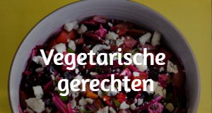

<ion-header  *ngIf="authenticationService.userData | async">
  <ion-toolbar color= "secondary" >
    <ion-buttons slot='start'>
      <ion-menu-button ></ion-menu-button>
    </ion-buttons>
    <ion-title>Categorieën</ion-title>
  </ion-toolbar>
  
</ion-header>

<ion-content  *ngIf="authenticationService.userData | async" >
  <ion-card tappable (click)="toMeatRecipes('Vlees')" >
    
  </ion-card>

  <ion-card tappable (click)="toFishRecipes('Vis')" >
    
  </ion-card>

  <ion-card tappable (click)="toVeganRecipes('Vegetarisch')" >
    
  </ion-card>
</ion-content>
